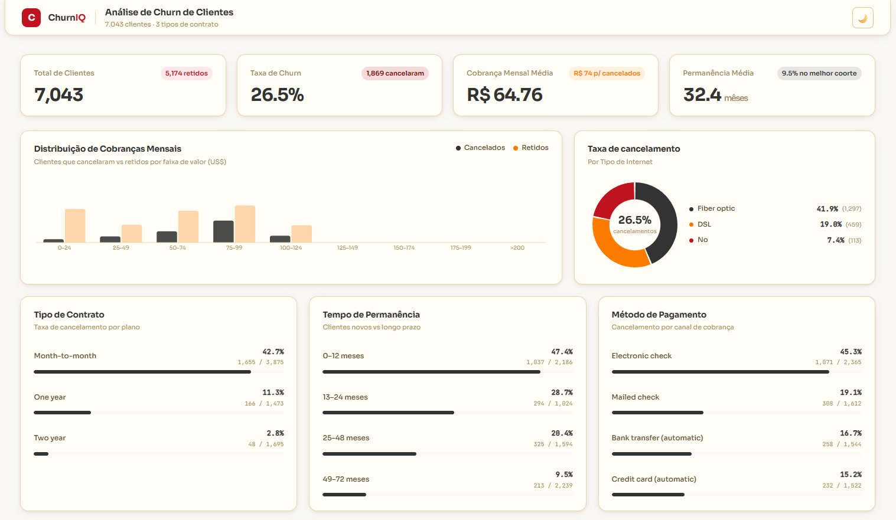

Dashboard Comercial
Power BIAnálise end-to-end de e-commerce com R$13,6M em receita, 99.4K pedidos e 3.095 vendedores — cobrindo visão executiva, logística e performance de vendedores com 97 medidas DAX e KPIs HTML customizados.
Transformo dados em insights estratégicos usando Power BI, Python e SQL
Sou Analista de Dados Júnior com experiência prática em empresas como Dotcom Internet, Alpargatas e Itaú Unibanco, atuando diretamente na análise, organização e visualização de dados para apoiar decisões estratégicas.
Na Alpargatas, desenvolvi dashboards no Power BI que diminuíram o tempo de análise de informações, na manutenção de planilhas com VBA e fechamento de indicadores de produção. Na Dotcom, atuo na parte de BI, criando dashboards gerenciais, fluxos de ETL/ELT com python e javascript e na construição de consultas em SQL aplicando regra de negocio.
Desenvolvimento e manutenção de dashboards, métricas estratégicas, construção de pipelines de dados com Python/n8n e otimização de consultas SQL aplicando regras de negócio para geração de indicadores estratégicos.
Desenvolvimento de Dashboards no Power BI reduzindo tempo de análise de 5min para 30s. Automações utilizando VBA Excel para rotinas manuais.
Atendimento ao cliente e suporte nas rotinas/operações bancarias
Análise end-to-end de e-commerce com R$13,6M em receita, 99.4K pedidos e 3.095 vendedores — cobrindo visão executiva, logística e performance de vendedores com 97 medidas DAX e KPIs HTML customizados.

Dashboard de análise de churn construído do zero em JavaScript puro — lê e processa o dataset IBM Telco no browser, calcula métricas em tempo real e renderiza gráficos interativos com Canvas API.
Pipeline ETL automatizado que extrai dados de API pública, persiste em SQLite via ORM e expõe um dashboard interativo com Streamlit — atualizado a cada 60 minutos.
Pipeline com arquitetura medallion (Bronze → Silver → Gold) integrando IBGE, Banco Central e World Bank — com validação de qualidade formal e Índice de Stress Econômico.
Query em produção que classifica vendas novas com regras de elegibilidade por status, motivo de cancelamento e exclusão de operações internas — via CTEs e UNION ALL.
3 CTEs encadeadas que identificam tipos distintos de reconexão via regex no histórico de eventos — com window function LAG, subquery correlacionada e deduplicação cruzada entre CTEs.